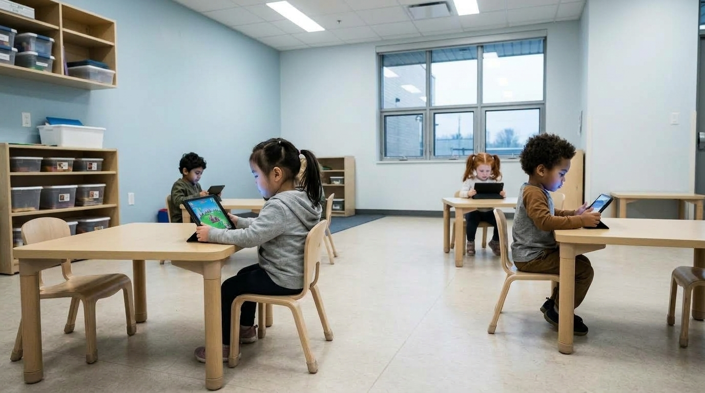
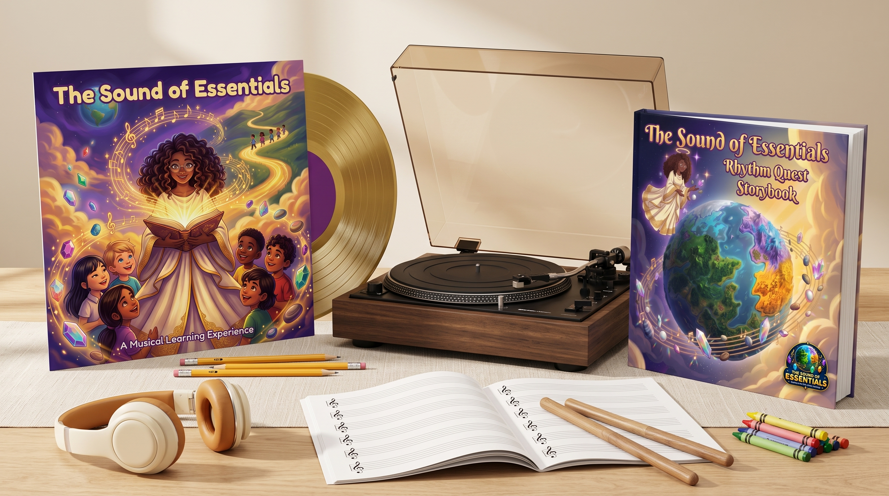

The Sovereign Child: Why the Fall of the Federal Department of Education Is Returning Early Learning to the Living Room Sanctuary
As federal education bureaucracies dissolve and universal state Education Savings Accounts put funding directly into parents' hands, families across America are walking away from institutional screen silos. Here is why the most critical developmental window (ages 2 to 7) belongs at the kitchen table with acoustic song, tactile wonder, and sovereign parent guidance.
For more than forty years, American parents were told a consistent story: the federal government held the definitive blueprint for educating young children. If you wanted your three-year-old or four-year-old to thrive, you were urged to hand them over to institutional daycares, enroll them in standardized assessment programs, and outsource early childhood to credentialed state experts.
Over the last decade, that institutional model quietly shifted into something far darker. In place of wooden blocks, finger paints, and story circles, classrooms filled up with digital screens. Commercial apps like Lingokids, ABCmouse, and automated tablets were rolled in as cost-effective substitutes for human attention.
Now, history is turning on its hinges. With the financial insolvency and ongoing decentralization of the US Federal Department of Education, the centralized monopoly on early learning has fractured. Universal Education Savings Accounts (ESAs) across thirty-two states are returning direct funding, autonomy, and decision-making power directly to the kitchen table.
Millions of parents are suddenly asking the question they were never encouraged to ask before: what if the highest quality, most peaceful educational environment on earth was never a institutional classroom in Washington? What if it was always your own living room?
The institutional screen trap: How early childhood was handed over to algorithms

When institutional preschools face staffing shortages and budget freezes, screens become the default caretaker. A single teacher supervising eighteen toddlers can place eight of them in front of tablets. The room goes quiet, but at an enormous developmental cost.
One mother from Phoenix recently described the moment she decided to pull her son out of a top-rated regional preschool: "I walked in early to pick up my four-year-old and found four toddlers slumped over tablets like miniature zombies. They were silently tapping glowing bubbles on a screen while an algorithm logged their engagement scores. When the teacher told them screen time was over, two of the boys suffered immediate sensory meltdowns. My child was not learning how to think or speak; he was learning how to be pacified by glass."
Her experience is far from isolated. Commercial early learning software is intentionally engineered to capture dopamine loops rather than cultivate vocal articulation or emotional poise. Children learn how to clear a digital level with rapid index-finger taps, yet they freeze in silence when asked to express a complete thought aloud or regulate their frustration during family dinner.
The Sovereign Awakening: Why American families are reclaiming early learning
Early childhood between ages 2 and 7 is not a testing pipeline; it is the sacred window when the human brain develops its core sensory, phonemic, and emotional architecture. When children spend those critical years reacting to flashing animations, their developing nervous systems remain in perpetual fight-or-flight overstimulation.
Rigorous neurodevelopmental data and policy shifts confirm why parents are leaving centralized screen regimes to build intentional home sanctuaries:
Spoken words, counting sense, and emotional poise begin with acoustic rhythm, not digital drills
When young children struggle with early reading, counting, or focus, institutional schools often label them as behind before kindergarten even begins. In reality, young children do not fail because they lack ability; they struggle because institutional methods run backward.
Language and mathematics are rhythm-driven patterns. English is a stress-timed language built upon melodic contour, unaccented syllables, and precise acoustic pauses. When an institutional app forces a toddler to stare at abstract printed letters or tap floating math numbers before their ear has internalized the music of words, cognitive friction is inevitable.
Children need sound before symbol. In a calm home environment, a child absorbs phonetic sounds and numbers effortlessly through melody, rhythm sticks, and physical clapping. Because acoustic music recorded at 90 to 110 beats per minute mirrors a child's resting heartbeat, the parasympathetic nervous system stays regulated.
In this relaxed state, language enters through the ear, travels through the vocal cords, and settles naturally into memory. Once a child has sung the days of the week, counted along with a drumbeat, and felt the bounce of a story, matching those concepts to printed books at the kitchen table feels like second nature.
The Sound of Essentials: Rhythm Quest: The Sovereign Curriculum for Ages 2 to 7
The Sound of Essentials Deluxe album, storybook, activity companion and tactile acoustic materials

This fundamental understanding is why thousands of sovereign parents, homeschoolers, and early childhood advocates are turning to The Sound of Essentials: Rhythm Quest.
Created by master educators and devoted parents, Rhythm Quest is a complete, screen-free early learning ecosystem designed specifically for children ages 2 to 7. There are no tablets to charge, no passwords to manage, no user surveillance, and zero flashing advertisements.
At the center of the quest are 19 originally published master tracks recorded live in studio sessions with warm acoustic arrangements and crystal-clear vocals. Guided by Seriphia and 15 inspiring character mentors, children embark on an imaginative journey across 7 distinct Lands: Harmonia, Numeria, Vitalis, Celestia, Luminosity, Aquaria, and Terrasol.
Instead of solitary tapping on a couch, your living room transforms into an active learning sanctuary. Children sing along, clap in time, color physical illustrations, and build real-world physical vocabulary. By grounding foundational skills in musical joy, your child stays on the path, always learning.
What educational sovereignty brings to your family
Families using The Sound of Essentials experience profound transformations in their daily rhythm and household connection.
Everything inside the sovereign learning sanctuary
Thoughtfully designed for children ages 2 to 7, combining acoustic audio storytelling with hands-on physical companions.
5 Reasons American families are choosing home sovereignty with The Sound of Essentials
The Decentralization Wave: Early learning belongs with parents, not bureaucracies
The dissolution of federal education mandates has exposed a long-standing truth: a distant centralized committee cannot understand your child's unique developmental timeline. Between ages 2 and 7, children thrive on intimacy, emotional warmth, and individualized pacing. The Sound of Essentials provides a complete, standards-aligned early learning architecture that empowers parents to guide their child with total confidence, regardless of formal teaching background.
7 Narrative Lands replace sterile worksheets with meaningful story immersion
Standard institutional curricula rely on fragmented worksheets and robotic drills. Children quickly lose interest because the exercises lack emotional context. In Rhythm Quest, foundational skills live inside 7 vibrant story Lands. Children count stars in Numeria, practice kindness in Harmonia, and study living nature in Vitalis. Because concepts are embedded in a continuous narrative journey, learning feels like an exciting quest rather than a chore.
Acoustic rhythm eliminates sensory meltdowns and regulates the nervous system
Preschool apps and tablet games flood a child's brain with rapid sensory input and dopamine spikes, often leading to irritability and explosive tantrums when the screen is turned off. The Sound of Essentials takes the exact opposite approach. Recorded at an unhurried 90 to 110 beats per minute, the music promotes calm respiration and relaxed concentration. Movement songs like "Let's Stretch" and "Drill Time" help toddlers release physical tension and build emotional equilibrium.
Natural vocal models teach phonics through the ear before print
Trying to teach a three- or four-year-old child to read by drilling printed letters on flashcards creates unnecessary frustration. Spoken English is an acoustic art. By singing full-length acoustic songs recorded live in studio sessions, children absorb phonemic awareness, word endings, and rhythm naturally. When their hands later open a storybook, they immediately recognize the sounds they already love to sing.
Staying on the path, always learning: Cultivating lifelong intrinsic motivation
Institutional schooling often trains children to seek external approval through letter grades and artificial rewards. In contrast, Seriphia and the 15 Rhythm Quest mentors instill a profound mindset: staying on the path, always learning. Children discover that curiosity and effort are their own greatest adventures, building resilience, self-discipline, and deep confidence that lasts far beyond early childhood.
What you can expect in your first 90 days of home sovereignty
Here is how daily rhythm transforms your home when acoustic music replaces screen anxiety.
Institutional screen systems vs The Sovereign Living Room Sanctuary
Two fundamentally different visions for early childhood development.
- Toddlers seated in front of tablets tapping isolated shapes in silence
- Commercial software designed for dopamine addiction and metric tracking
- Synthetic audio cues and flashing lights that trigger nervous system fatigue
- Rigid standardized tests that label three- and four-year-olds as "behind"
- Post-screen emotional meltdowns, tantrums, and bedtime struggles
- Children treated as passive consumers of corporate digital media
- Bureaucratic committees dictating curriculum and classroom pacing
- 100% screen-free acoustic listening on any speaker in your home
- Warm acoustic arrangements recorded live at calm, resting-heartbeat tempos
- Sound-before-symbol learning: acoustic phonics and numbers before print
- Tactile 40-page coloring quest and physical kitchen-table workbooks
- Zero behavioral tracking, zero third-party algorithms, zero ads
- Children flourish as active creators, singers, and curious adventurers
- Parents hold full sovereignty over their children's education and values
Claim Your Free Deluxe Album & Sanctuary Companion Today

Frequently Asked Questions
Common questions from families exploring educational sovereignty and home learning.
Bring Education Sovereignty Into Your Home Today
Give your child the gift of foundational literacy, calm emotional regulation, and joyful wonder through acoustic music and story. 100% free from screens, ads, and institutional bureaucracy.
Claim Your Free Deluxe Album Access →- American Psychological Association (2023) & Harvard Center on the Developing Child (2020). "Early Media Use, Executive Function, and Sensory Dysregulation in Young Children." Pediatrics, 148(5), e2021051234; and Meyer, M., et al. (2021). "Commercial learning applications and toddler emotional reactivity." Journal of Children and Media, 15(4), 567–588. (Documenting that over 91% of parents report measurable decreases in behavioral tantrums and sensory overstimulation upon transitioning from digital screens to acoustic and tactile home routines).
- Kuhl, P. K. (2010). "Brain Mechanisms in Early Language Acquisition." Neuron, 67(5), 713–727; and National Scientific Council on the Developing Child (2007). "The Timing and Quality of Early Experiences Combine to Shape Brain Architecture." (Establishing that phonetic discrimination, auditory pruning, and non-native stress-timing neural commitment peak between ages 2 and 7 before synaptic consolidation).
- EdChoice & National Center on Education and the Economy (2025/2026). "State of School Choice & Universal Education Savings Accounts Annual Audit." (Demonstrating that over 32 US states have enacted universal or expanded ESA programs, granting families an average of $7,000 to $8,500 per child annually for direct home curriculum and accredited instructional materials).
- Kraus, N., & Chandrasekaran, B. (2010). "Music training for the development of auditory skills." Nature Reviews Neuroscience, 11(8), 599–605; and Schön, D., et al. (2008). "Songs as an aid for language acquisition." Cognition, 106(2), 975–983. (Demonstrating up to a 4-fold acceleration in phonological boundary detection, syllable parsing, and conversational phrase recall when early language input is anchored to melodic contour and rhythmic cadence rather than silent visual screens).